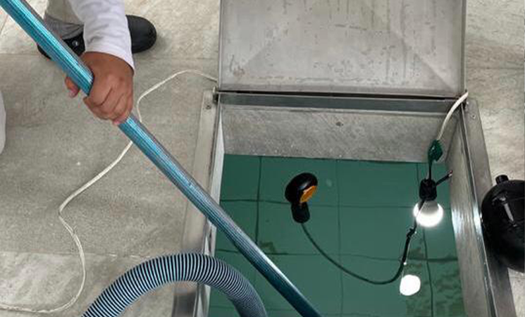
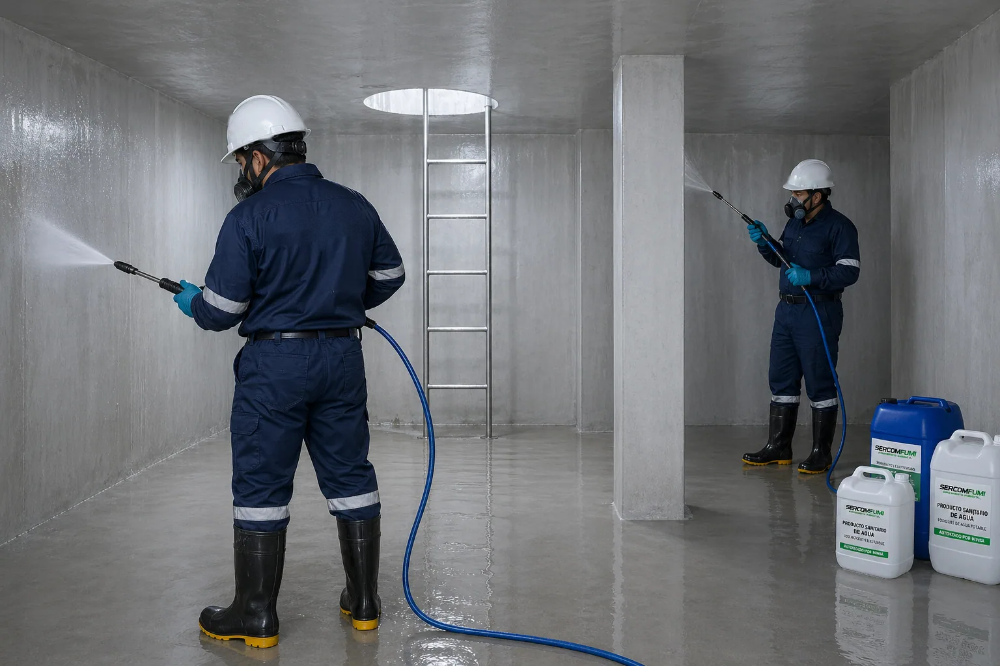

Limpieza y desinfección de cisternas: por qué no es opcional
La calidad del agua de la red pública varía según el sector, y toda cisterna acumula sedimentos con el tiempo, incluso si el agua que entra se ve limpia. El problema es que esos sedimentos se van al fondo del tanque, no se mezclan con el agua que sale por la toma — así que puedes estar tomando agua visualmente transparente mientras en el fondo de tu cisterna hay una capa de lodo, arena fina y materia orgánica que se convierte en ambiente propicio para bacterias con el paso de los meses. Ofrecemos limpieza y desinfección de cisternas como servicio independiente, no solo como parte de una reparación de emergencia.

Vaciado y retiro completo de lodos y sedimentos

Lavado a presión y desinfección profunda de paredes
¿Qué hacemos en una limpieza y desinfección de cisterna?
Vaciado y retiro manual de sedimentos del fondo, cepillado de paredes y piso para quitar la biopelícula adherida, desinfección con cloro de grado alimenticio en la dosis segura para consumo humano, y enjuague final hasta retirar todo residuo antes de dejarla lista para llenarse. Recomendamos hacerlo cada 6 meses como norma general — o antes si notas olor o sabor raro en el agua, sedimento visible al vaciar parcialmente el tanque, o insectos/larvas cerca de la tapa de inspección. Aprovechamos la visita para revisar de forma visual el estado de la bomba y el flotador.
Limpieza de tanques de agua, tanque elevado y reservorio
En Guayaquil, muchas casas y edificios combinan cisterna (el depósito bajo o enterrado) con tanque elevado — el tinaco de la azotea — y los dos acumulan sedimento por igual. Por eso también nos buscan para limpieza de tanques de agua, lavado de tanques de agua, limpieza de tanque elevado o mantenimiento de tanque de agua: es el mismo vaciado, cepillado y desinfección que aplicamos a la cisterna, solo que en el tanque de arriba. Lo mismo pasa con la limpieza de reservorio de agua y la limpieza de cisterna de agua potable — atendemos los dos depósitos en la misma visita, porque el agua pasa de uno al otro y de nada sirve dejar limpia la cisterna de agua si el tanque elevado sigue con sedimento. Este servicio también se busca escrito como "limpieza de sisternas".
Sellado e impermeabilización de cisternas
Además de la limpieza periódica, hacemos sellado de cisternas e impermeabilización de cisternas cuando el problema no es sedimento sino filtración: grietas en las paredes o la tapa, humedad visible por fuera del tanque, o pérdida de nivel de agua sin explicación aparente. Es un servicio distinto a la limpieza — se hace después de vaciar y secar la cisterna por completo, y evita que un daño estructural del tanque termine afectando la calidad del agua que almacena.
Vaciado de cisterna sin limpieza completa
También ofrecemos el vaciado de cisterna como servicio independiente, para cuando necesitas el tanque vacío por otro motivo — antes de una reparación estructural, una obra cercana o una mudanza — y no necesariamente el proceso completo de limpieza y desinfección. Te confirmamos en la visita cuál de los dos servicios corresponde a tu caso.